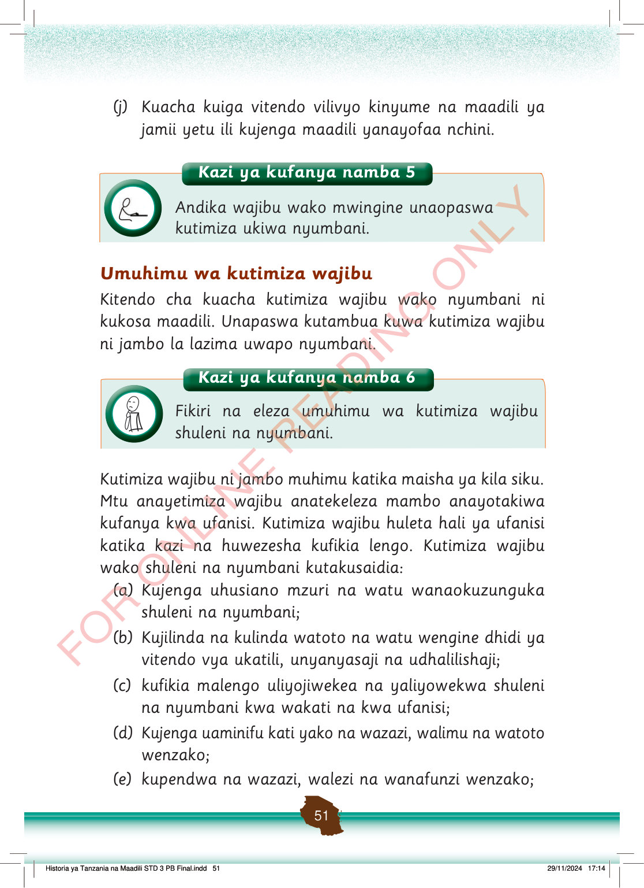

Kazi ya kufanya namba 5
Kazi ya kufanya namba 5. Andika wajibu wako mwingine unaopaswa kutimiza ukiwa nyumbani.
Andika wajibu wako mwingine unaopaswa kutimiza ukiwa nyumbani.
Kuacha kuiga vitendo vilivyo kinyume na maadili ya jamii yetu ili kujenga maadili yanayofaa nchini.
Umuhimu wa kutimiza wajibu
Kitendo cha kuacha kutimiza wajibu wako nyumbani ni kukosa maadili.
Unapaswa kutambua kuwa kutimiza wajibu ni jambo la lazima uwapo nyumbani.
Kazi ya kufanya namba 6. Fikiri na eleza umuhimu wa kutimiza wajibu shuleni na nyumbani.
Kazi ya kufanya namba 6
Fikiri na eleza umuhimu wa kutimiza wajibu shuleni na nyumbani.
Kutimiza wajibu ni jambo muhimu katika maisha ya kila siku.
Mtu anayetimiza wajibu anatekeleza mambo anayotakiwa kufanya kwa ufanisi.
Kutimiza wajibu huleta hali ya ufanisi katika kazi na huwezesha kufikia lengo.
Kutimiza wajibu wako shuleni na nyumbani kutakusaidia:
(a)
Kujenga uhusiano mzuri na watu wanaokuzunguka shuleni na nyumbani;
(b)
Kujilinda na kulinda watoto na watu wengine dhidi ya vitendo vya ukatili, unyanyasaji na udhalilishaji;
(c)
kufikia malengo uliyojiwekea na yaliyowekwa shuleni na nyumbani kwa wakati na kwa ufanisi;
(d)
Kujenga uaminifu kati yako na wazazi, walimu na watoto wenzako;
(e)
kupendwa na wazazi, walezi na wanafunzi wenzako;